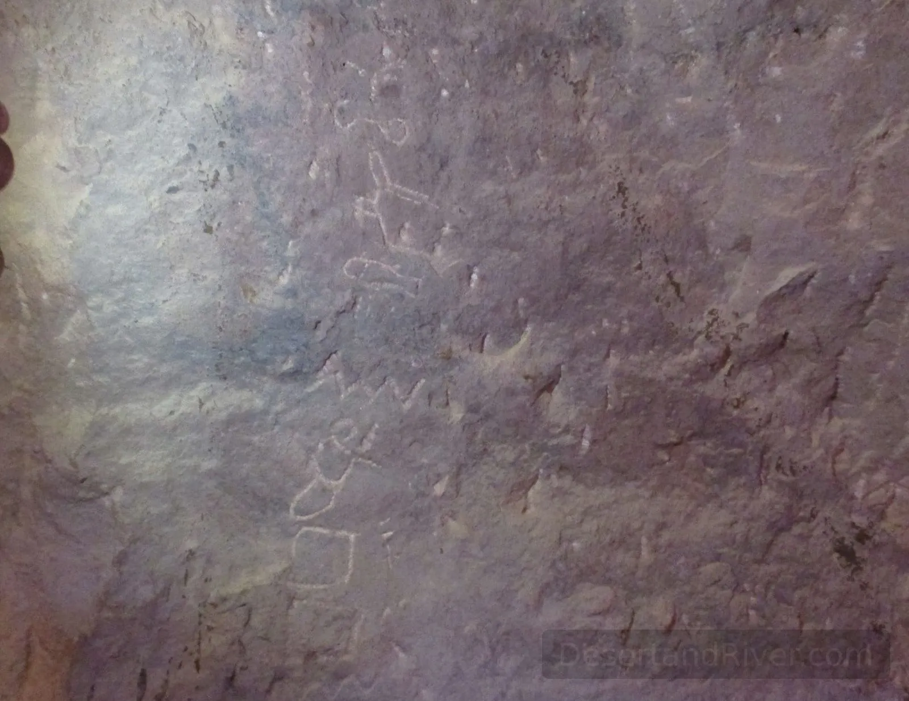

Hoch auf einem Berg im Süd-Sinai steht der Tempel der Hathor, und nur einen kurzen Fußweg entfernt liegt die Höhle, in der das erste Alphabet der Geschichte gefunden wurde. Die meisten Anbieter brauchen zwei oder drei Tage nach Serabit el Khadim. Wir machen es an einem langen, vollen Tag ab Dahab, mit den Nawamis-Gräbern und unserem eigenen Kamelfelsen unterwegs. Joseph und Annet begleiten Sie, und Chefköchin Mary packt Ihr Mittagessen für den Berg.

Wo unser ABC begann
Vor rund 3.800 Jahren ritzten Arbeiter in den Türkisminen von Serabit el Khadim kurze Botschaften in den Fels. Sie nahmen ägyptische Hieroglyphen und benutzten sie als Buchstaben für Laute. Diese Schrift, das Protosinaitische, ist der Vorfahr fast aller Alphabete der Welt, vom Arabischen und Hebräischen bis zum Griechischen und Lateinischen. Flinders Petrie fand die Inschriften, und der englische Ägyptologe Alan Gardiner entschlüsselte sie. In Magharet el Teleha stehen Sie direkt davor.

Der Tag
- 06:00: Abholung an Ihrem Hotel in Dahab oder bei The Hub
- Ca. 1 Stunde: Fahrt zu den Nawamis, runden Steingräbern, etwa 6.000 Jahre alt und älter als die Pyramiden. Etwa 30 Minuten Aufenthalt
- Kamelfelsen: an der Straße Richtung St. Katharina: ein großer Felsen mit nabatäischen, koptischen und griechischen Inschriften und Kamelbildern. Kaum jemand weiß, dass er dort steht
- Ca. 3 Stunden: Fahrt nach Serabit el Khadim
- Ca. 1 Stunde: mit dem Mittagessen von Chefköchin Mary im Gepäck steigen wir zum Hathor-Tempel auf, der Göttin der Liebe und „Herrin des Türkis“. Zeit für den Tempel und die Aussicht
- 30 Minuten: Wanderung nach Magharet el Teleha, zur Höhle des ersten Alphabets
- Ca. 1,5 Stunden: Abstieg vom Berg mit Halt in Rod el-Eir: Felsbilder einer Giraffe, Hieroglyphen, protosinaitische Buchstaben und ein 3.000 Jahre alter „Hashtag“, eingeritzt von den alten Ägyptern
- Ca. 3,5 Stunden: Rückfahrt. Gegen 20:00 Uhr an Ihrem Hotel oder bei The Hub


Jeder Buchstabe, den Sie gerade lesen, hat einen Urahn, der in Serabit el Khadim in den Fels geritzt wurde.
Vorher anschauen
Serabit el Khadim: Türkisminen und der Hathor-Tempel
Das erste Alphabet: protosinaitische Schrift in Serabit el Khadim
Die Nawamis-Gräber, älter als die Pyramiden
Inbegriffen
- Abholung und Rückbringung an Ihrem Hotel in Dahab oder bei The Hub
- Privater 4x4 für Ihre Gruppe
- Alle Genehmigungen und Beduinengebühren
- Mittagessen von Chefköchin Mary
- Wasser
- Ihre Guides Joseph & Annet
Nicht inklusive: Frühstück, Trinkgelder und persönliche Ausgaben.
Mitbringen
- Ihren Reisepass (Kontrollpunkte auf den Inlandstraßen)
- Gute Wanderschuhe
- Lange Hose
- Hut und Sonnenschutz
Ist diese Reise etwas für Sie?
Diese Reise erfordert gute Kondition: etwa drei Stunden Wandern mit steilem Aufstieg zum Tempel und langem Abstieg, dazu etwa sieben Stunden im Auto. Wenn Sie es ruhiger mögen, fragen Sie uns nach der Variante in zwei Tagen.
Preis
400 € pro Auto, 1 bis 4 Personen
Diese Reise buchen
Schicken Sie uns Ihr Datum und die Personenzahl per WhatsApp. Wir bestätigen den Termin und senden Ihnen einen sicheren Zahlungslink für die Anzahlung. Den Rest zahlen Sie in Dahab.
Per WhatsApp buchenDas sagen unsere Gäste


Stornierung
Kostenlose Stornierung bis 3 Tage vor der Reise. Bei späterer Stornierung wird der volle Reisepreis berechnet.